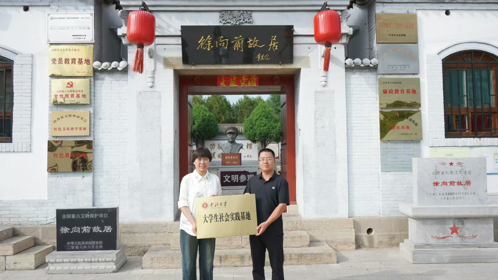
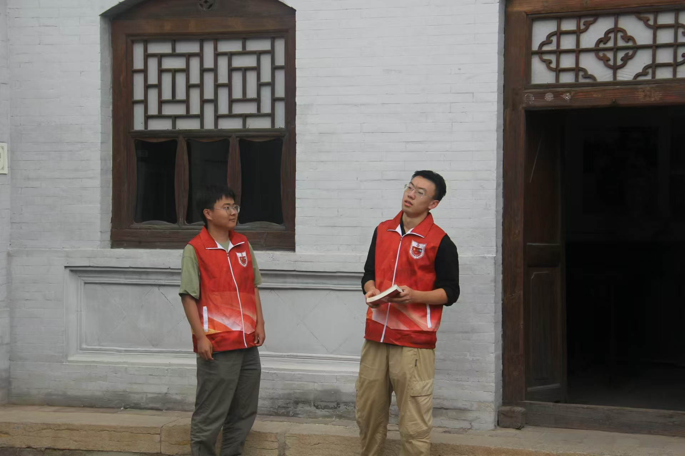
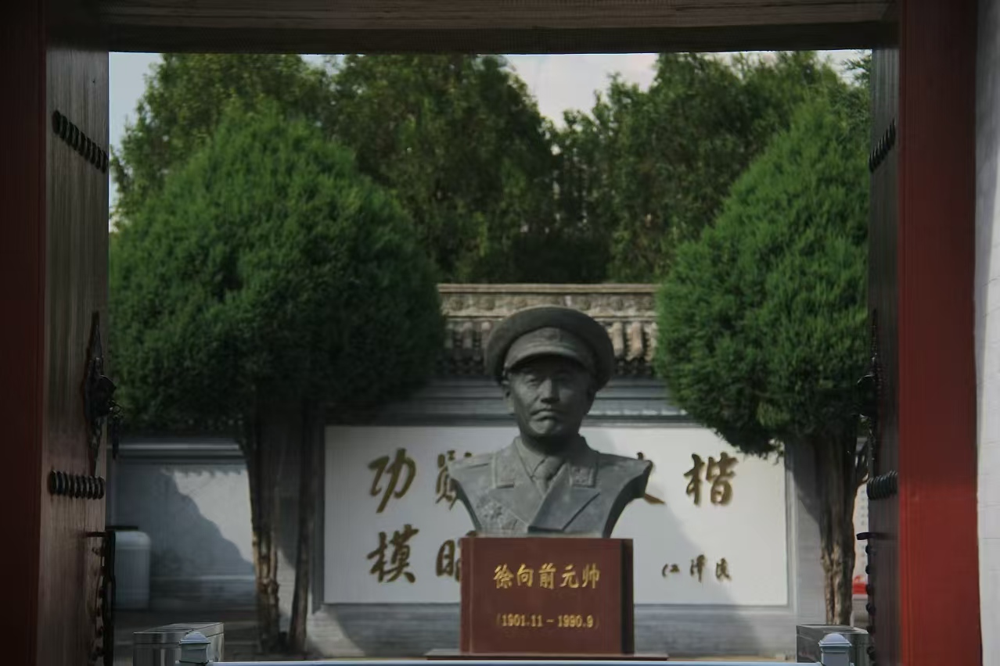

中北大学“数智赋能百年红色家书”暑期社会实践团在指导教师杜瑞平老师的带领下赴山西省五台县，参观布衣将军徐向前元帅故居。在故居内，实践团成员上演了一出名为《长看春意在人间，越是硬仗越向前》的情景剧，通过生动的表演与感人的家书，重现了徐向前将军的光辉事迹与家国情怀。
徐向前故居庄严肃穆，坐落在五台山下，承载着厚重的历史记忆。实践团成员在讲解员的引导下，走进这座历史遗址，细致地了解了徐向前元帅的革命历程及其对国家的卓越贡献。故居内陈列的文物与照片，记录了这位布衣将军在中国革命历史中的重要角色。
参观结束后，实践团成员在故居的小院中倾情上演了舞台剧《长看春意在人间，越是硬仗越向前》。该剧通过历史背景、诗歌创作、个人经历与情感，特别是家书情怀的刻画，展现了徐向前将军坚韧不拔、舍小家为大家的形象。舞台设计以历史战场、书房、学校教室等为背景，通过对话、行动及旁白，生动再现了徐向前将军的成长、革命生涯及对国家的奉献。
在五台山下的书房中，少年徐向前（由云卓然同学饰演）坚定地对父亲徐懋淮（由白圣杰同学饰演）表示自己不会放弃读书的志向，即使家境艰难，他依然坚持学习。转眼间，场景转到河北阜平的书店，徐向前在书店做学徒，阅读《三国演义》，立志参军报国。这一幕通过少年时期的求知与志向，展示了徐向前在困境中自学成才的过程。
场景转到川至中学的校长办公室内，徐向前与校长（由牛恒志同学饰演）展开激烈对话，阐述自己教授学生国情与历史的重要性。面对校长的谴责，徐向前坚持自己的教育理念，最终拿走辞职信，毅然离开。这一幕突出了他在教育上的坚定信念和对国家未来的责任感。
在临汾南乔村，1941年5月的傍晚，徐向前元帅手握家书，心中充满对家人的思念与对胜利的渴望。通过旁白（由闫玉洁同学朗读）和徐向前低声念信的独白，观众感受到了他对家人的深切挂念和对国家的深沉责任。他的信中写道：“无论多远，无论多艰难，我们都会在一起，共同迎接明天的曙光。”这封家书生动展现了他在革命岁月中的坚毅与柔情。
演出结束后，实践团成员与观众交流了感受，大家对红色家书的深刻内涵与革命历史有了更深的理解。此次活动不仅是对历史的重温，更是对家书中红色精神的传承与弘扬。
故居忆革命岁月，真情传家书情怀
2024年08月21日

